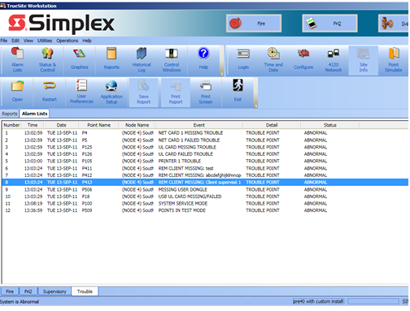
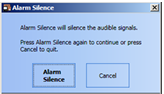

Em caso de FIRE ALARM

Visão Geral
O botão Silenciar Alarme permite silenciar um sinal de alarme ativo. O botão pode ser acessado
também pelo menu Operações.
Nota: Para usar a opção Silenciar Alarme, a lista de dispositivos deve estar corretamente
configurada.
Como silenciar um alarme
Nota: Se houver um alarme ativo no sistema, o banner irá piscar e o alarme sonoro do PC será
ativado, se configurado.
Para enviar o comando de Silenciar Alarme pela rede, siga o procedimento:
- Clique em Silenciar Alarme no menu Operações.
- Uma caixa de confirmação será exibida. Clique em Silenciar Alarme na caixa de diálogo para
confirmar.

A mensagem "SILENCIAMENTO DE ALARME EM ANDAMENTO" será exibida na barra de status na parte
inferior da tela. Após alguns segundos, a mensagem desaparece. O alarme será silenciado em todos os nós
configurados.
Nota: "Silenciado" será indicado no status do sistema até que o sistema seja reiniciado ou um
novo alarme ocorra.
Em caso de TROUBLE

Quando o painel indicar uma condição de TROUBLE (falha):
1. Verifique a mensagem exibida no visor.
2. Anote o código ou descrição do problema.
3. Comunique o responsável pela manutenção.
4. Não tente corrigir o problema sem conhecimento técnico.
Como desabilitar um dispositivo
O que é desabilitar um dispositivo?
Desabilitar um dispositivo significa impedir temporariamente que ele envie sinais ao painel.
Quando desabilitar: Apenas em casos de manutenção ou testes autorizados.
Como desabilitar:
1. Acesse o menu do painel TSW-simplex.
2. Selecione o dispositivo desejado.
3. Escolha a opção "Desabilitar".
4. Confirme a operação.
5. Reabilite o dispositivo após a manutenção.